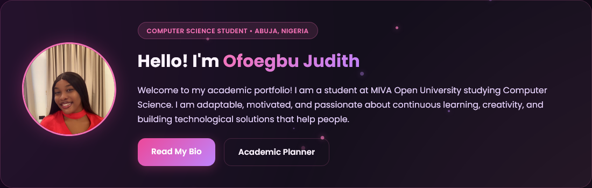

COS 106 Term Project
Student Portfolio & Academic Management Website
A responsive, multi-page web platform designed to showcase my academic profile, professional background, skills, and interactive academic task management. Built with semantic HTML5, glassmorphic CSS3 styling with flexbox/grid layouts, dynamic particle background animations, and vanilla JavaScript DOM manipulation for task tracking and form validation.